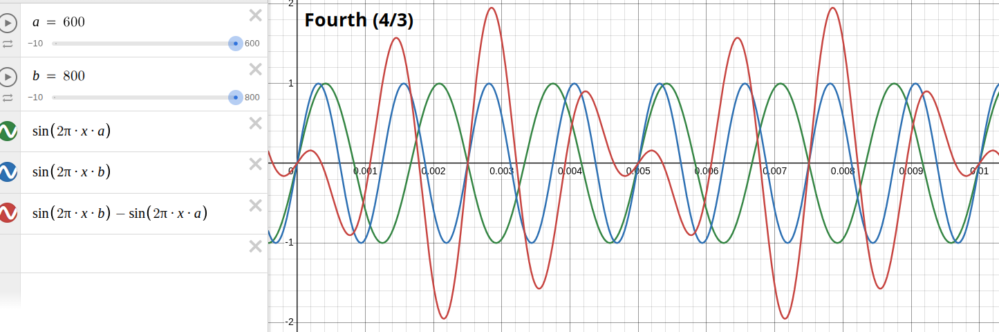
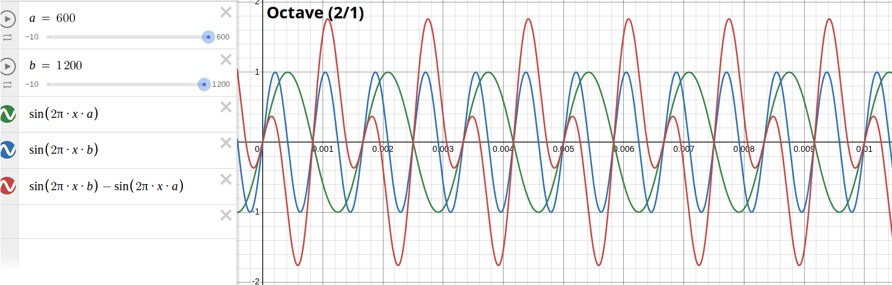
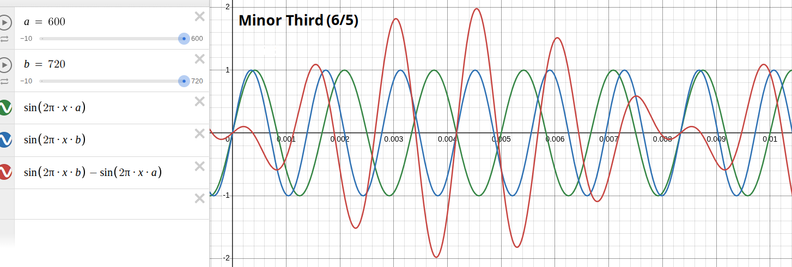
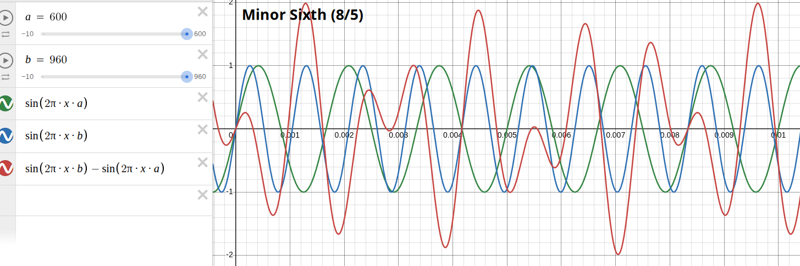
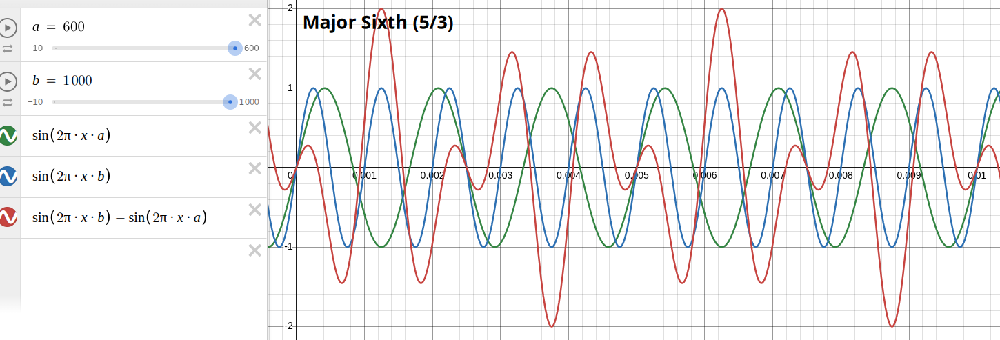

Sine-wave diagrams of the most harmonious intervals.
Following diagram shows the sine-waves of two interval-tones in green (600 Hertz) and blue (900 Hertz) of duration 1/100 second, representing a fifth, and their resulting difference-tone in red (300 Hertz, thus there are three waves in 1/100 second, framed in yellow).
One Hertz means one wave in one second, so 100 Hertz would be 100 waves in one second, or one wave in 1/100 second. One wave consists of a curve above the horizontal zero-line and a curve below it.
The diagrams below show the sine-wave interferences of other intervals in same colors. The frequencies are given on top in variables a and b.





